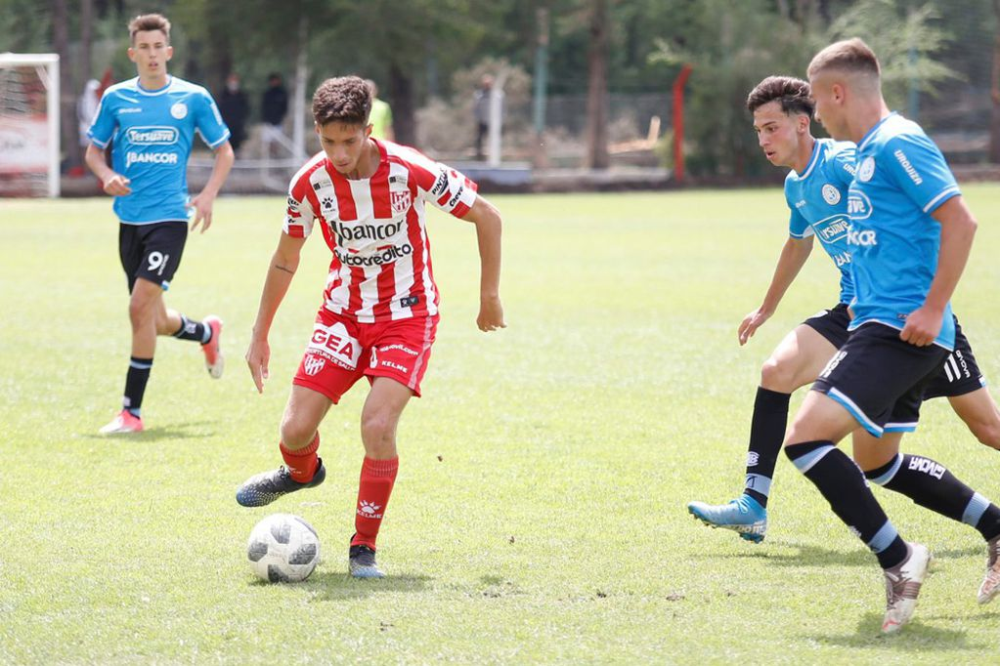

River, el puntero del torneo sigue encaminado a ser uno de los protagonistas de la temporada. El equipo de la rivera aplastó a San Lorenzo por 4 a 0 en una actuación excepcional
Union y Belgrano disputaron un partido muy parejo

Gran victoria de Talleres como visitante del Granate